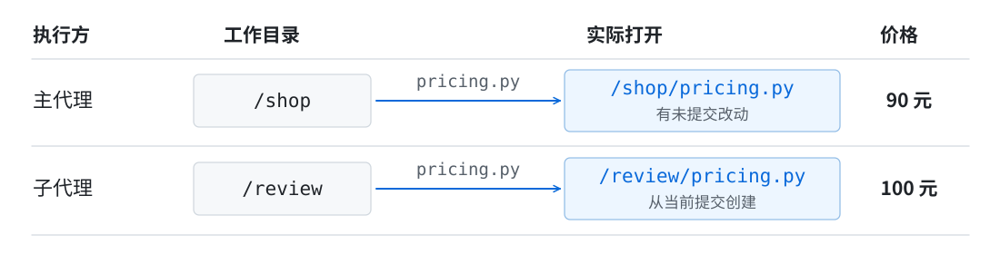
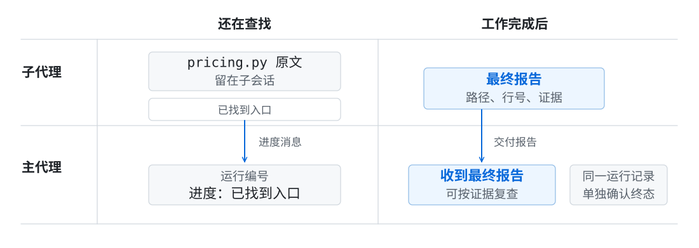

什么时候把工作交给子代理
“订单预览里会员价是 180，按规则该是 200。”主代理刚看到这行结果，接下来有两条线可查。沿网页找到它真正调用的定价函数，沿回归用例找到测试覆盖的入口。盘点完两条路径，才能知道这次失败为什么没被挡住。值得专门开一个子会话吗？
两条线能各自查清吗？
从页面往下查、从测试往上查，两边可以独立出发。一方交回 preview_order → quote_preview，另一方交回 test_member_price → quote_checkout。主代理把两条路径对起来，就能提出一个可检验的判断：旧测试即使通过，也可能从未进入出错的预览函数。这里的函数名和价格用于说明源码行为。
如果读一个函数就能判断会员价为什么算错，我会让主代理直接查。现在页面和回归用例是两条能独立追的线，查页面还要翻好几份文件，值得把这一条交出去。「先问第二个会话能独立交回什么。」 假如下一步要修好函数再复核，第二方需要的是改好的交付版本。等主代理交出那份版本再开复核，可以省掉来回确认“你测的是哪一版”。
说清要交回什么，再开新会话
把页面这条线交给定位员，先试一句“查一下刚才为什么失败了”。普通派发从独立会话开始。子代理有自己的系统提示、任务和角色材料，父代理刚读到的“180，预期 200”还留在父历史里。“刚才”指哪次失败，得由主代理在委托里说清楚。把同一句委托交给 Claude Code 的普通子代理，也要在任务消息中交代失败现象，因为它同样从新的上下文开始。 Claude Code 的子会话启动材料
我会先把委托补成“会员预览算出 180，预期 200。请找出页面实际调用的定价函数，交回路径、行号和还没查明的条件。”这几句话就够定位员开工。搜索和读文件的过程留在子会话里，主代理收到几行带出处的结论，就能回到原文件复核。程序会在新会话里装配角色提示、可用工具和项目材料。把开工所需的证据写进委托，再核对它交回了什么，就是这次交接多出来的工作。 普通子会话怎样装入任务和角色材料
父代理读过文件，子代理还要读吗？
定位员查到问题，主代理说“pricing.py 我已经读过，你可以试改了”。这句话只交代了线索。改文件要用的内容版本，得由执行 Edit 的那一方自己取得。若存创建子执行的 ToolContext 时，读取记录和待办都是空的。即使父代理给过旧内容，子代理也要重新读自己目录中的文件，程序才能判断读过之后有没有人改动。
src/ruocun/agent/run_agent.py · 第 320–338 行
child_ctx = replace(parent_ctx,
workspaceRoot=str(workspace), cwd=str(working), signal=child_signal,
createWorktree=None, activeWorktree=None,
readFiles=set(), readMeta={}, pendingUnverifiedWrites=set(), todoWriteRequired=None,
currentImageData=None, todos=[], skills=copy.deepcopy(parent_ctx.skills),
adaptSkill=None, onFileAccessed=None, onSkillsInstalled=None, notifyUser=None,
toolHooks=None, agentHookRuntime=None, agentMcpRuntime=None,
subagentDepth=parent_ctx.subagentDepth + 1, runAgent=None, forkToolSnapshot=None,
launchAgent=None, agentRunsInBackground=None, taskManager=None,
sendToTask=None, resumeAgent=None, messageParent=None,
archiveRead=None,
setMode=None if mode == "plan" else permit.setMode, askChoice=None,
requestTaskWait=None, rollbackTaskWait=None, onShellOutput=None,
getShellPlan=permit.getShellPlan,
sandboxPolicy=permit.sandboxPolicy,
authorizeSandboxShell=permit.authorizeSandboxShell,
approveSandboxWrite=permit.approveSandboxWrite,
searchTools=lambda query: child_registry.searchAndActivateDeferred(query, parent_ctx.lang)
+ "\n" + child_registry.searchAndActivateMcp(query))看 readFiles 和 readMeta，两份记录都从空开始。即使定位员和主代理用的是同一目录，这次 Edit 也要靠定位员自己读到的版本。另一个要沿用的是父会话的计划模式。比如角色平时拥有 Edit，甚至为了维护记忆配置过文件工具，计划模式的最后一层筛选仍会去掉写入、执行和 MCP 工具。留下的工具在调用时继续检查其参数和权限。普通子会话也没有可用的再次派发入口，遇到扩大范围的需求可以把问题带回。 角色工具受哪些条件约束 · 父会话处于 plan 时的子权限
角色还可能有专用的文档查询服务。若存为这次子执行打开该角色声明并配置好的 MCP 连接。交给后台接手时，重建连接后还要和原工具定义、可见集合核对。这样从前台切到后台后，同一个工具名依旧指向原来那份契约。配置了 SubagentStart 时，Hook 附加的信息要先进入子会话并确认保存，模型才能拿到它。正常收尾走 SubagentStop，结果未确认时保留现场。 启动 Hook 的附加消息 · MCP 连接随执行开关 · Hook 的执行事件
两个同名文件分别在哪个目录？
定位员继续读主目录，复核员需要试改，于是约好给复核员一棵独立的 Git 工作树。它是在另一个目录展开的项目文件。下面按图看两份同名文件。主目录 /shop/pricing.py 已改为 90，改动还没提交。以当前 Git 提交建成的 /review/pricing.py 仍是 100。两人都说自己读了 pricing.py，完整位置和文件版本却各有一份。

假如新工作树没建出来，程序悄悄在父目录执行同一个试改，写入的就是主代理正在用的 /shop/pricing.py。若存要求先核实工作树再派发。确认创建失败，就把“子代理未派发”交回父会话。Git 操作已发出而目录、登记或 HEAD 无法核实时，保留现场供检查。工作树让两份文件在同一台机器上各有自己的目录。角色能调用什么、实际写入范围多大，还由权限与沙箱策略决定。 工作树未就绪就拒绝派发 · Git 写入结果未确认时保留什么
这一次复核用的哪个提交？
创建时，仓库 HEAD 是 h2，任务文字写“请复核旧提交 h1”。新工作树仍从 h2 创建。任务文字说明要核对什么，目录和 Git 提交才告诉执行器眼前是什么。如果要复核父目录刚改的 90，先把它交成一份可核实的变更，再到复核目录确认读到 90。
复核员完成后，如果工作树有新增提交或未提交改动，若存保留目录和分支，供主代理核对或合并。工作树干净且身份核实后才可清理。报告里几乎总值得写上目录、提交和实际跑过的入口。拿到“测试过了”时，父代理就能回到当时那份文件。 完成后怎样处理独立工作树
Fork 能带走哪段父历史？
定位员开工所需的背景要是几句话说得清，写成委托就够了。如果已经追过几层页面调用、跑过两组对照测试，而后续判断还依赖分散在多轮回包里的原文，逐条转述既费时间，也容易漏掉某次测试的入口。这时才值得考虑 fork=true。它让子会话从一份经过配对筛选的父历史副本起步，省去重写这批材料，子会话也要为继承的历史留出上下文空间。它沿用父模型提出这次分派时看到的工具清单和对应定义，后来才加载的工具留给之后的请求。取不到当时的工具快照，或者这次又另外指定模型、权限模式或隔离，程序就会拒绝这次 Fork。 请求前冻结当时可见的工具 · 使用父请求快照派发 Fork
发起 Fork 的那次调用还没回包
父会话较早的 Read 调用 r1 已经收到回包。最新的 a2 正要求派发子代理，要由这个子代理跑完才会有结果。照抄历史，子代理第一份请求就欠着 a2 的回复。等父代理先把 a2 填好，双方又会互相等。
src/ruocun/agent/fork_agent.py · 第 39–45 行
def forkRequestMessages(parent_messages: Sequence[ChatMessage], task: str) -> list[ChatMessage]:
directive = "[fork 任务] " + task
messages = buildForkContextMessages(parent_messages, directive)
# 占位信息作为用户文本保留。只有工具消息可以与助手的工具调用配对。
paired_ids = {message.get("tool_call_id") for message in messages if message.get("role") == "tool"}
return [message for message in messages if message.get("role") != "assistant"
or all(call.get("id") in paired_ids for call in message.get("tool_calls") or ())]paired_ids 从工具回包取得编号，此刻只有 r1。它的调用声明和回包都可以留下，声明 a2 的助手消息会被过滤。子任务指令随一条新的用户消息加入。Fork 用文字留个提示，模型能理解那里开始了分派，真正的工具回包仍以 role="tool" 和调用编号来配对。子会话保有自己的副本，父会话稍后再把 a2 的结果配回原位置。
中途问一句，结束交一份报告
在后台，复核员已经找到价格入口，用 MessageParent 回报 progress 就能更新进度。若追到会员恰好过期当天，测试要选一个产品口径，可发 attention 请主代理在安全边界处理。同一次运行补到确认口径后，主代理用 TaskSend 把说明存进正在运行的子任务收件箱。子代理到准备下一次请求的边界才会把它放入自己的历史。同一发送身份重到时，内容相同可以确认，改了内容则会拒绝。运行已结束就要走明确的后续派发。 子代理发出的两类消息 · 父代理把补充保存给活跃任务
两份回报到齐。A 在 h1 跑旧结算入口，会员价 200。B 在 h2 跑预览，会员价 180。待交付的是 h2，要求两个入口都保持 200。此时能确认的是 h2 的预览失败，h2 的结算还缺结果。只把 A 跑的版本换到 h2，还是那个结算入口，仍算出 200。现在结算已有当前版本的通过证据，先查预览那条路径即可。任务编号让主代理找到报告，报告里的版本和入口才说明这次验证覆盖了哪里。修好以后，两个入口仍要在最终版本上复验。
交付报告取自那一次运行
定位员读过十份文件，主代理只需要调用路径和证据。子会话压缩过历史时，当前消息列表里原来的下标可能已经变了。若存保存这次运行的原文输出起点，用运行编号查询那一段，再取最后一条非空的助手正文作为成功报告。主代理拿到报告和运行终态，可以沿报告给的路径复查。失败或取消要看对应终态，失败时有时会附已经得到的部分输出。 按运行编号和原文位置找报告 · 完成后交付最后一条助手正文
读完一份文件时，父代理在等什么？
回到子代理刚读到 pricing.py 的时点。原文先成为子会话的工具回包，下一次子请求可以用它继续追踪。父代理手里此时或许只有后台编号和“已找到入口”的进度，仍缺入场时约定的证据。

若该子执行支持从前台转后台，交出去的是模型循环的接续位置。前台等调用和回包配齐，保存进度、剩余轮次和输出起点，后台从这里接手。接手者还须核对实际目录及适用的工具定义。身份核实失败时保留现场，主代理据实处理。这和上一章唤醒原等待的决定相通：先确认拥有哪一份回执，再判断下一步。 在模型请求边界保存交接点
复核员失联后怎样接续？
复核员失联前只说过“准备保存核查结果”。这句进度既没有结果正文，也没证明文件已写好。先核对旧运行的提交和未决工具。如果原记录还有副作用未确认或缺少附件，要先解决它们。能明确继续的普通子代理，还需要原模型、角色和版本、目录、消息、权限、预算等可核实的材料。 继续前核实未决操作与原运行
得到明确继续指令时，若存先保存恢复决定，再为同一任务记录新运行并接续。相同许可再次到达时，从已有记录查状态。当前的继续入口要求普通代理能重建原执行条件。Fork 现场无法通过普通任务恢复时，可以查看原转录再给一个明确的新任务。 许可保存和新运行开工的先后 · 先沿原编号核实已经发生的动作
主目录尚未提交的会员阈值是 5，Git 基线里是 3。独立工作树建成后，复核员报告测试退出码为 0，报告没有注明自己读到了哪个阈值。现在可以说“新阈值已验证”吗？先做哪一项最小补查？
核对判断
退出码只确认那份工作树的测试成功。先请复核员从实际运行目录读回阈值和提交。如果仍为 3，把本次变更明确交到复核目录，确认是 5，再运行覆盖新阈值的断言。
这一章带走什么
一项调查能独立推进，又能交回可复核的证据，就值得考虑开子会话。定位员追页面用到的定价函数，主代理照样可以核对测试走的入口。委托说清失败现象、要交回的路径和行号，翻过的文件原文就可以留在子会话里。
拿到“会员价测试通过”，先查报告属于哪次运行、用的是哪个目录和版本、走的是什么入口。结算算出 200 元的报告，能给那一版结算作证。当前预览有没有修好，还得去预览入口查。
交给子代理的父历史里，每组调用和回包得配对。要是主会话快塞不下了，压缩能从两个回包之间切开吗？
面经自测
什么任务一个 Agent 就够了，什么时候值得分给多个 Agent？
字节跳动 · 一面 · 面经原帖 · 题意转述
展开参考回答
我会先看两件事能不能分别得到有用的结果。每一步都在等前一步答案，就让一个 Agent 做。能各自调查或需要独立复核，再拆开。
若存可以让一个子代理找会员折扣入口，另一个按指定版本核对用例。父代理接回路径和证据，交接、复查也都要花时间。
多个 Agent 并行做事，怎样分配任务、跟踪各自的状态，再把结果汇总起来？
美团 · 一面 · 面经原帖 · 题意转述 可回看 第 9 章
展开参考回答
给每个人一件可以单独验收的事，按各自的运行编号收进度和结果。两份报告冲突时，我会查他们在哪个目录、哪个提交、从哪个入口跑了什么用例。
旧版本结算通过，新版本预览失败，这两个结果可以同时成立。我要把失败带回修正，再在同一份待交付版本上把要求覆盖的两个入口都验证一遍。
父代理已经读过文件，为什么子代理要改它还得自己读？
若存设计题
展开参考回答
派去独立工作树复核，为什么子代理看不见父目录里刚改的代码？
若存设计题
展开参考回答
我先核对工作树创建时的 HEAD，再看要验的改动是否在这份目录里。父目录里没提交的改价不会自动带进来，在任务文字里指定旧提交也不会让程序自动切过去。
子 Agent 在运行中怎样和主 Agent 通信？
阿里云 · 一面 · 面经原帖 · 题意转述
展开参考回答
日常进度按同一次运行更新。需要主代理作决定时，单独发需要关注的消息。这样“找到入口了”和“过期会员该怎么算”可以得到不同处理。
子代理已经读完文件，能据此结束主代理的回合吗？
若存设计题
展开参考回答
我会先看回包进了哪个会话、父代理在等什么结果。子代理读完文件，能把原文用于自己的下一次请求。主代理若还在等复核结论，就要等相应交付。
例如后台只报“已找到价格入口”，父代理可以记进度。等到报告交回实际入口和用例，它才能据此判断会员价是否已经查清。
子代理的对话压缩过了，父代理怎样找到这次交付的报告？
若存设计题